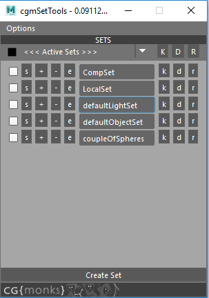
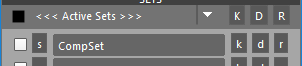
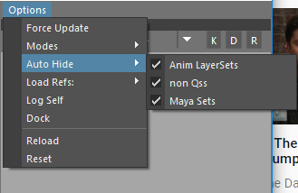
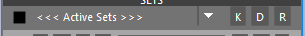
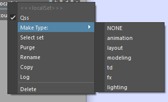

SetTools¶
Status: Alpha release
Overview¶
cgmSetTools is a tool for working with selection sets in maya. The 2.0 rewrite was completed in September 2017.
What can I do with it?
- Filter certain types of selection sets to work with
- Mutiset functionality. Key,reset,delete key on muliple sets as once
Accessing¶
UI
- Top cgm menu -
CGM> animation> cgmSetTools
- Top cgm menu -
Toolbox>TD>Rigging
Toolbox>Anim
Python
import cgm.core.tools.setTools as setTools
setTools.ui()
If you open the ui, you should see something like this:
The UI has to main parts. The top menu and body.
Menu¶
The top menu is where we set our options.

Force Update¶
Necessary when reloading the scene or if you made changes outside the tool and want to see those changes represented.
Modes¶
The tool allows for the user to specify want options they want displayed during use.
Anim¶
When active new options will show up in the ui. Both the muliset function bar and the left options on the row per objectSet.
s- Always visible. Select the items of the objectSet.k- Key the items of the objectSetd- Delete any curent keys of items in the objectSetr- Reset the items of the objectSet
Setup¶

+- Add selected items to this objectSet-- Remove selected items from this objectSete- Edit mode. When toggled, an additional scrollList is generated below the row's objectSet which offers options on a per item level.

- Currently left clicking any item in the list will select it. Looking into more options. Open to suggestions
Autohide¶
[] Anim Layersets- Hide anim layerset sets[] non Qss- Hide non qss sets[] Maya Sets- Hide default maya sets
Load Refs¶

You have the ability to only load the referenced sets you want. By default they aren't loaded. This is most handy with animation sets and multiple assets. The menu is split by:
All- This will activate all reference prefixes[] Prefix- You can toggle individual prefixesClear- If you want to clear all of the reference prefixes
Dock¶
You can dock the tool with the dock button. Pressing when docked will undock it. Docked it looks something like this...
Body¶
MultiSet Row¶
Only available with anim mode
[]- When checked or unchecked all of the checkboxes on all loaded objectSet rows will toggle to match[<<< Active Sets>>>]- Toggle for two different multimodes.- Active sets - Only objectSets with their rows checked will be affected
- All Loaded Sets - ALL loaded sets will be affected
K- Key the items of the objectSetsD- Delete any curent keys of items in the objectSetsR- Reset the items of the objectSets
ObjectSet Row¶

As previously discussed, certain modes have more options:
s- Always visible. Select the items of the objectSet.+- Add selected items to this objectSet-- Remove selected items from this objectSete- Edit mode. When toggled, an additional scrollList is generated below the row's objectSet which offers options on a per item level.- Currently left clicking any item in the list will select it. Looking into more options. Open to suggestions
[ nameOfASet ]- Textfield that displays the name of the set's base name. Each has an annotation with the set's full name. Additionally, each has a right click menu.k- Key the items of the objectSetd- Delete any curent keys of items in the objectSetr- Reset the items of the objectSet
Popup¶
Right click menu on the objectSet row textfield.
[] Qss- Qss state. Check to change.Make Type:- Tag as a specific type. Unsure if we're keeping this. It's intended as an additional way to flag sets for filtering.Select set- Select the set itself.Purge- Clear the set but leave the setRename- Bring up a uiPrompt to rename the setCopy- Create a new set with all of this set's itemsLog- Print a breakdown of what's in the set in the script editorDelete- Delete the set